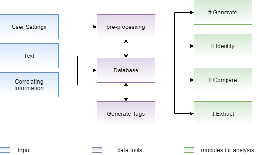

Welcome to Text Tagger’s documentation!¶
Um módulo para analisar textos de acordo com suas características, ou tags. Esse módulo consiste em um tollbox que facilita análises de texto-característica de forma a tornar o NLP tão acessível para o usuário, quanto módulos como Scikit-Learn e Tensorflow tornam para Machine Learning.
A module to analyze texts according to their characteristics, or tags. This module consists of a toll box that facilitates resource text management in order to make NLP as accessible to the user as modules such as Scikit-Learn and Tensorflow become for Machine Learning.
Model Pipeline¶

This module is structured in three layers:
In the first layer, the information entered by the user is obtained, which represents texts, information to correlate (tags) and desired settings. In possession of this data, the second layer, performs a pre-processing according to the data structure necessary for the NLP analysis modules, storing them in a structure called database, with the configured database it is possible to use different analysis modules in the last layer.
Submodels¶
Generate¶
According to a tag and an initial text, it completes that text with words that can form a common sense phrase within the context of the selected tag. The operation of this module consists of, through a simple reccorent network, which uses a sequential model with layers of embedding, bidirectional LSTM and dense, calculates the words most likely to complete a sequence of previous words.
Compare¶
Calculates the similarity between two tags, this module uses methods to calculate the distance between the embeddings of the selected tags, such as the cosine method that calculates the distance between the centroid of both embeddings and the jaccard method that calculates this distance by dividing the intersection of both embeddings by the union of these. The distance values, considered as similarity, are values that belong to the range from zero to one, in which the closer to zero the less the similarity and the closer to one the greater the similarity.
Extract¶
based on a database and a specific tag the module aims to give the user a overview of what the texts in that tag are about and how the information present in them is treated.
- To give an idea on tag content some of the functions on the extract module are:
get the most important words in the tag using different word frequency methods (PMI, NPMI)
get the most relevant tags in the tag by using clustering and different embedings (tf-idf, cbow, doc2vec, lda)
get the word cloud of the documents in the tag
get the lda topics that would be created with the documents in the tag
- To allow the user to understand the relations between the topics in the tag some functions are:
make analogies of words by using word2vec embeding
find the most similar word to another word
With this functions the user can explore some specific properties of a slice of the dataframe and understand what it talks about in a visual way